我们认为，所有的数字都是平等的，这是不言而喻的。不，我们不是指“相等”——显然不是！我们的意思是，当我们考虑10个十进制数字，从0到9时，我们期望它们在数字世界中发挥的作用是相同的。
可悲的事实是，数字如同人类一样爱慕虚荣，它们都想争当第一。事实上，我们把最左边的数字称为最重要的数字——原因是：想象一下，你将购买的一件物品的成本为43.52美元。哪个数字对你最重要？4最重要，而末尾的2无足轻重。如果4突然变成了9，你会非常在意，但对于最右边2的变化就不会有同样的感觉。
那些期望宇宙公平的人可能会期望每个数字都获得平等的好处，扮演着最重要的角色，可怜的0除外，它并不是最重要的数字。这个荣誉只归于其他九位数字。它们都希望尽可能地成为最重要的那一个。
对于诸如0.053这种数字，5被认为是最重要的数字。当我们谈到最重要的数字时，它总是第一个非零数字。
我们预计数字1到9会平均分配，每个数字为起始数字的机会应该都是九分之一（约11%）。以2开头的数字肯定不会比以5开头的多，对吗？
当我们考虑一个数值范围，比如1到999,999时，会认为1到9的每个数字都是最有意义的。在这种情况下，1到9中的每一个数字作为开头数字的出现机会是同等的。
然而，这个结果会因为我们所选择数字范围的不同而有所偏差。相反，如果我们查看1到19之间的数字，那么以2到9中的每个数字开头的数字只出现一次，而1与另外11个数值相比，是最重要的数字。
公平起见，让我们从现实世界中收集数字。我们需要小心，不要选择可能集中于狭窄范围内的测量数据。因此，不要收集“成人身高”这种数值，因为以厘米表示时，几乎所有的测量结果都以1或2开头（因为成年人的身高很少会大于299厘米或小于100厘米）。
如果成人的身高测量值以英尺[1]表示，则几乎所有的值都将以4，5或6中的一个开头。
为了确保所有的数字都有一个“公平的”机会落在最左边的位置，我们要从宽泛的数值范围内收集各种测量数据。例如，考虑国家的人口。这些数值覆盖的范围从十亿（中国和印度）到少于一万（岛国瑙鲁）。除了人口之外，我们还为
这些人口和其他测量数据的来源为《美国中央情报局世界实况报道》（CIA World Fact Book），可在网上查到。
数百个国家收集了以下数据：
●国内生产总值（以美元计），
●机场的数量，
●总面积（以平方公里计），
●年发电量（以千瓦时计），
●成品油年度消费（以桶计），
●公路总长（以公里计），
●铁路总长（以公里计）以及
●电话的数量。
这样，我们收集了近两千个测量数据，然后统计出这些数据中有多少是以1开头，多少是以2开头的，依此类推。结果如下：
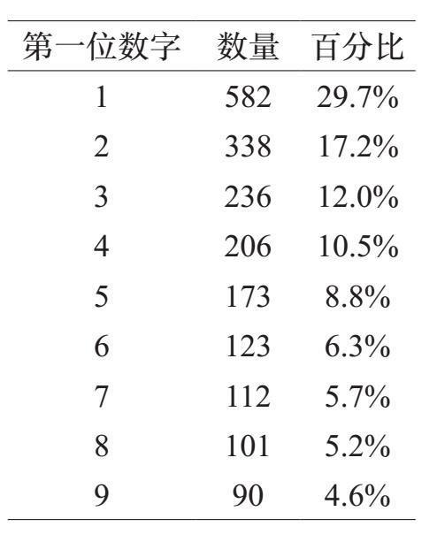
令人惊讶的是，出现最多的第一位数字是1（约30%），最少的是9（小于5%）！
我们鼓励读者重复这个实验。可以使用年鉴或其他参考资料，收集河流长度、山脉高度、股票价格、不同种类动物的平均重量、小说的字数、各国水稻产量等数据中的第一位数字。
收集足够多的测量数据后可以看到相同的规律。这些数字最左边的数字通常是1，而出现频率最低的是9。
起始数字的不公平分布称为本福德定律（Benford's law）。这个定律是以弗兰克·本福德（Frank Benford）命名的，他在1938年发表了一篇关于这个现象的文章，虽然早在1881年西蒙·纽科姆（Simon Newcomb）就已经发表过了。
本福德定律比作为最重要的数字“1出现最多，9出现最少”更为具体。本福德定律断言——给定足够多的数据——频率如下：
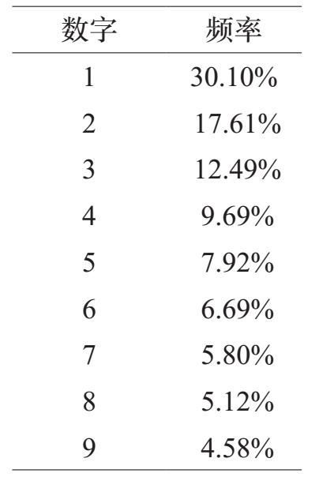
这些数字是近似值。以1开头的数字出现的预测频率为30.102999566398114…%。稍后，我们将解释这些数值的产生过程。
我们还可以从一个地方找到起始数字的不公平分布，下面是一个标准的乘法表：
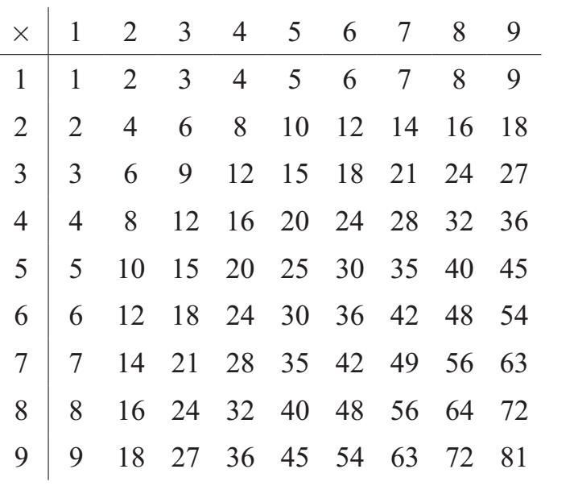
通常乘法表每列有10行，但乘以10与乘以1实际上没有什么不同，我们省略了那些行。
在这个表中的81个项中，有18个以1开始；它们是：
1×1=1 2×5=10 2×6=12 2×7=14 2×8=16
2×9=18 3×4=12 3×5=15 3×6=18 4×3=12
4×4=16 5×2=10 5×3=15 6×2=12 6×3=18
7×2=14 8×2=18 9×2=18
另一方面，只有三个项以9开始，即：
1×9=9 3×3=9 9×1=9
这是标准乘法表中起始数字的计算结果。
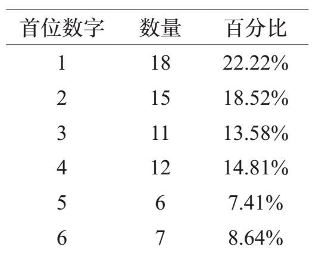
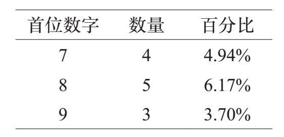
我们发现较小的数字比较大的数字更常见，但这不是本福德定律所预测的分布。
乘法表给出了将一位数乘以另一位数的所有可能结果。换句话说，它给出了所有两两相乘的结果，从1×1，1×2，直到9×9。
为了扩展这个想法，让我们考虑所有可能的三个一位数相乘的结果。也就是说，我们计算以下所有的乘法：
1×1×1，1×1×2，…，9×9×8，9×9×9
我们可以将其视为一个三维乘法表——一个9×9×9的魔方，其结果（例如4×7×3=84）令人不快地隐藏在内部。
总计93=729次计算。在完成这些计算之后，我们统计每个数字在最左边时出现的频率，并得出下面的图表：
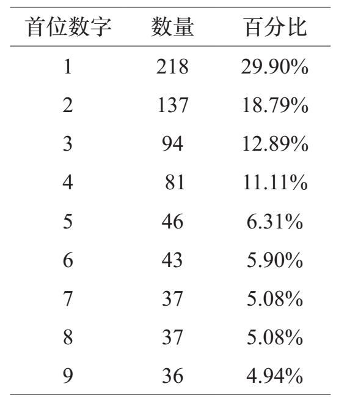
一个十维的乘法表有910个项，计算出近35亿个数字。
没有理由就此打住。我们可以继续创建，将四个、五个、六个或更多的数字组合在一起的乘法表。让我们来看看十维乘法表的情况。这样一个表格会考虑所有可能的十个数字的乘法（从1到9中选择）。换句话说，我们计算以下所有乘法：
1 × 1 × 1 × 1 × 1 × 1 × 1 × 1 × 1 × 1
1 × 1 × 1 × 1 × 1 × 1 × 1 × 1 × 1 × 2
1 × 1 × 1 × 1 × 1 × 1 × 1 × 1 × 1 × 3
…
1 × 1 × 1 × 1 × 1 × 1 × 1 × 1 × 1 × 9
1 × 1 × 1 × 1 × 1 × 1 × 1 × 1 × 2 × 1
1 × 1 × 1 × 1 × 1 × 1 × 1 × 1 × 2 × 2
1 × 1 × 1 × 1 × 1 × 1 × 1 × 1 × 2 × 3
……
9 × 9 × 9 × 9 × 9 × 9 × 9 × 9 × 9 × 8
9 × 9 × 9 × 9 × 9 × 9 × 9 × 9 × 9 × 9
然后统计出有多少个以1开头的数字，多少个以2开头的数字，依此类推。结果如下：
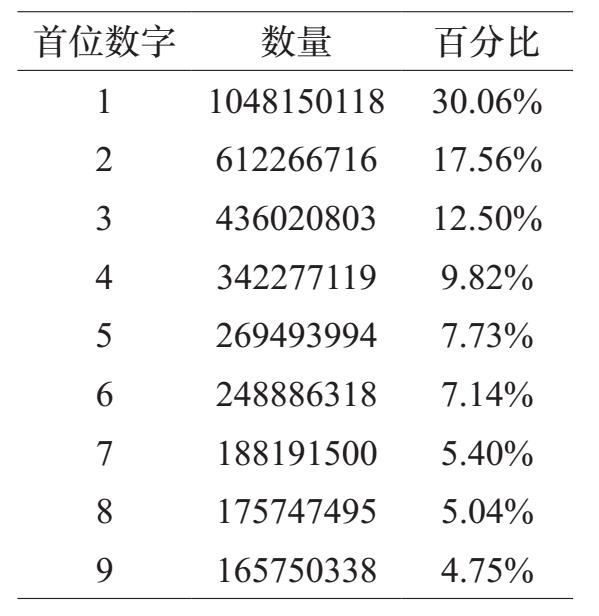
首位数字的出现频率与本福德的预测大体吻合。
在我们研究本福德定律的细节之前，我们简单地提一下实际应用。假设一个不诚实的人正在提交虚假的财务报告（费用索赔，伪造的资产负债表等）。简而言之，这个人在说谎，只是伪造了他或她声称的真实数字。为了使数据看起来逼真，犯罪分子可能无意中从数字1到9中均匀地选择了一个数字，作为伪造数字的第一位数字。
法务会计师可以快速核验首位数字是否符合本福德定律。如果不符合，则表明——但不能证明——报告的数字存在造假。
科学计数法是用来表示特别大或特别小的数的一种方便的形式。这种方法将12,300,000表示为1.23×107。也就是说，我们将一个数字写成一个十进制值（即至少为1且小于10）乘以10的幂。我们称十进制值为尾数。例如，853,100,000的尾数是8.531：
0.0043的尾数是4.3，因为0.0043=4.3×10–3
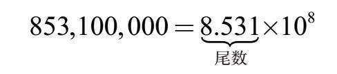
我们已经设置了这个定义，使得（正数的）尾数永远不会小于1，也不会大于或等于10。
1≤尾数＜10
我们可以使用尾数来展现本福德定律的精妙。粗略地说，本福德定律指出，在广泛的数值范围内所收集的大量测量数据中，大约30%的数字是以1作为最重要的数字的。换言之，大约30%的测量数据的尾数m将满足m＜2。
为了细化本福德定律，我们可以看看许多测量数据的前两位数字，并提问：尾数满足（假设）m＜1.7的频率是多少？
这里有一个相同的方法来提出这个问题：前两位数字为10，11，12，13，14，15或16的测量数据出现的次数是多少？
一般而言，对于1到10之间的任意数m，我们定义f（m）是尾数小于m的测量数据所占的比例。
例如，f（2）是以1开头的测量数据的比例。f（3）是起始数字小于3的数据比例，即用首位数字为1或2进行测量。
符号f（m）是尾数小于m的测量数据的比例。这一符号对于理解本福德定律的数值如何产生具有重要意义。
我们怎样才能用这个符号来表示起始数字，比如4的数据的比例呢？
让我们来解决下面这个问题：
●注意f（4）不是起始数字为4的数据的比例，它的值代表第一个数字小于4的数据的比例。这些是第一位数字为1，2和3的数字。
●同样，f（5）代表的是第一个数字小于5的数据比例。它们的第一个数字是1，2，3和4。
●因此，只需要关注第一个数字为4的测量数据，我们用f（5）–f（4）。f（5）项包括起始数字为1到4的数值，然后我们刨去那些起始数字为1到3的值，就只留下我们感兴趣的数字：以4开头的数字。
要找到第一位数字是4的测量数据的比例，我们需要计算f（5）–f（4）。
这里有两个值得思考的问题：f（1）和f（10）的值是多少？在继续阅读之前想一想。
记住f（m）是尾数小于m的测量数据的比例。记住，尾数是满足1≤m＜10的数字m。具体含义是什么？
•没有数字的尾数小于1意味着f（1）=0。根本没有这种形式的测量数据！
•每个数字的尾数小于10意味着f（10）=1（或者100%，如果你愿意）。每个数字都符合这个标准。
在这两个极端之间，f（m）的值在增加。m越大，尾数小于m的数字数量就越多。
我们接下来的步骤是了解f（m）在m值位于1到10之间的表现。我们最初的考虑是和起始数字有关，且这种表示法扩大了我们的观点，使其向更大的普遍性发展，并将揭示发生了什么。
我们收集了数千公里的测量数据，并看到最初数字的模式。如果我们从公里改变到英里，相同的模式仍然存在。同样，如果我们用美元来衡量国家的国内生产总值，我们会看到一个最初数据带来的模式，而当我们将美元兑换为欧元（或英镑或俄罗斯卢布）时，同样的模式依然存在。我们来仔细看看从码到英尺的转换。
对于以米为长度标准单位的读者，你只需要知道码的长度与米的长度大致相当（略短一点），而1英尺的长度恰好是1码的三分之一。
假设我们以码测量了许多距离，并统计出了第一个数字。这些测量数据有多少是以2开始的呢？这个数字包括2.1码，或28码，或0.213码，或299.8码。使用我们在前一节中开发的符号，以2开始的数据比例是f（3）–f（2）。
记住，f（3）给出的是尾数少于3的测量值的比例，因此包括所有以1或2开头的值。我们用f（3）减去所有那些以1开头的数值——即f（2），因为后者是所有起始数字小于2的值的比例。
现在让我们把所有的测量值转换成英尺。为此，我们简单地乘以3。这样2.1码变为6.3英尺。从以2开头的单位为码的数据可以导出起始数字的范围为从6到9，但不包括9的单位为英尺的测量值。感到惊讶吗？
你可能已经猜到了，如果一个单位为码的测量值是以2开头的，那么它转换为英尺后将以6开头。这不是很正确，因为2.8码等于8.4英尺。因此，当以码为单位的数据的尾数是从2到3（但不包括3）时，在以英尺表示时，相同的测量值的尾数是从6到9，但不包括9。
以6，7或8开头的测量值的比例是多少？答案是f（9）–f（6）。
这里有一句妙语：既然我们正在处理完全相同的数值集合——以2开头的单位为码的数值或以5或6或7开始的以英尺为单位的数值——它们的比例必然是相同的：也就是说，f（3）–f（2）得出的是与f（9）–f（6）相同的比例。
f（9）项给出了第一个数字是1到8的测量值的比例，从中我们减去f （6），刨去那些第一个数字是1到5的测量值。剩下的是最重要的数字是6，7或8的值的比例。
如下图所示。两个矩形代表我们记录的所有测量值，在左边的矩形中记录的是以码为单位测量结果，右边的矩形中记录的是以英尺为单位相同的测量结果。左侧的阴影区域表示以2开头的所有的测量值（以码为单位），右侧的阴影区域显示以6，7或8开头的所有的测量值（以英尺为单位）。
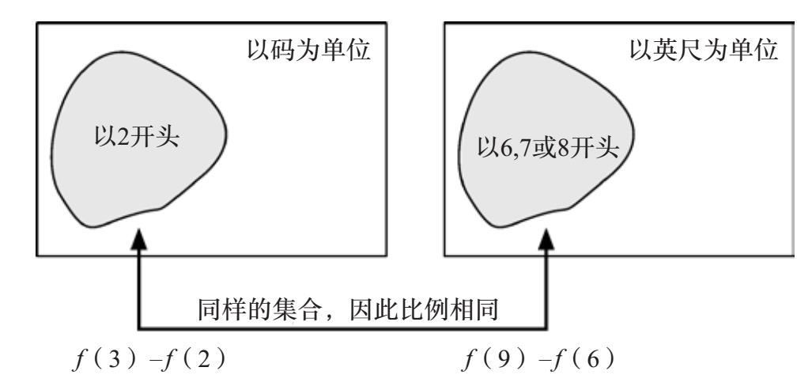
重要的是要注意，两个阴影区域是相同的！所以以2开头的测量值的比例（左）等于以6，7或8开头的值的比例（右）。因此得出等式f （3）–f（2）=f（9）–f（6）。
我们现在把这个想法扩展到更广泛的意义上。让我们想象一下，我们收集了大量的测量值，并且我们统计了这些测量结果中有多少个数据的尾数少于某个数字a。满足这个条件的测量数据的比例是f（a）。
现在我们进行单位转换，让我们用b代表换算系数。换句话说，如果我们最初测量的是一个物体，在第一类单位中的结果是23.5，那么当我们在新的单位集合中重新进行测量时，结果是23.5×b。
如果我们将码转换为英尺，那么换算系数b=3。对于其他转换，我们将使用不同的乘数。
如果ab＞10或者ab＜1，那么就有一个“疑难杂症”。这个“疑难杂症”是一个我们可以解决的令人讨厌的技术问题，但是处理这个问题会使我们偏离轨道，分散我们的注意力。而在1≤ab≤10这个假设下继续讨论是没有问题的。
回想一下，f（a）给出了第一组单位中测量值的比例，尾数从1到a，但不包括a。当乘以b时，在第二组单位中将得出尾数为从a到ab，但不包括ab的数据。在原始测量中尾数小于a的值的比例是f（a）。尾数从b到ab（但不包括ab）的值（在新的单位集合中）的比例是f（ab）–f（b）。
这里有相同的一句精妙的结论：这两组测量值是相同的，所以它们代表的整组值的比例是相同的。用符号表示为
f（a）=f（ab）–f（b）
重新排列如下：
f（ab）=f（a）+f（b）（*）
这导致我们提出接下来的问题：什么样的函数满足方程（*）中的关系以及条件f（1）=0和f（10）=1？
一些数学运算可以撤销。例如，如果我们计算一个正数的平方，我们会得到一个结果。例如，62=36。我们通过取平方根撤销平方：
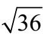
=6。对于正数，平方和平方根的操作可以相互撤销。以类似的方式，幂的运算是可以被对数“撤消”的。本节将介绍有关常用（十进制）对数的内容。如果你熟悉这一点，请跳到下一节。
在这一章中，当我们提到指数时，我们的意思是10的若干次幂。例如，104的结果是10000。我们通过对数函数“撤销”这个幂运算：
log(10000)=4。
阐释对数函数的一个有用的方法是把它看作“几次幂？”的函数。10的几次幂能得到已知数？例如，10的几次幂是1000？因为1000=10×10×10=103得到1000的指数就是3。这正是我们写log（1000）=3时的意思。
不难理解当我们计算10的正整数次幂时会发生什么，我们简单地将10乘以自身多次：
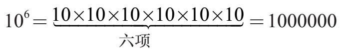
相应地，求出10的幂的对数只需简单计算0的数量：
log(1000000000)=9。
计算10的非整数次幂更复杂。关键是理解10m和10n相乘的乘积对于指数m和n的意义。
106×105的结果是什么？不要畏惧，因为计算10的n次方相乘很容易。看看发生什么，让我们写出含义：
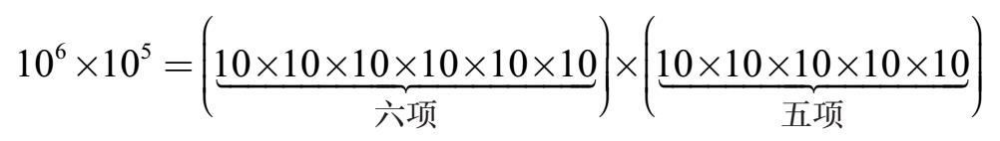
结果是什么？不需要乘法！只用计算10的个数：有11个。换一种说法：
106×105=1011。
一旦我们看到这一点，就能得到两个正整数n次方相乘的计算公式
10m×10n=10m+n（指数定律）
因为10m贡献的10的因数是m，10n贡献的10的因数是n。
将求幂推广到非整数幂的关键是将指数规律10m×10n=10m+n扩展到所有可能的指数。让我们看看它将把我们带往哪里。
让我们计算100.5。我们可能不知道这个数字是多少，但是看看当我们计算100.5×100.5时会发生什么。在关系式10m×10n=10m+n中设定m和n都等于0.5，我们得出：
100.5×100.5=100.5+0.5=101=10。
我们所学到的是，如果我们自己将100.5与自己相乘，结果是10。换句话说，100.5是10的平方根：
我们鼓励你在计算器上试一下。计算100.5和
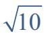
，可以观察到这两个结果是相同的。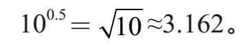
做更多的工作（这会让我们走得太远），我们可以计算出10的所有幂。下图是x的范围为0到1时函数10x的图表。
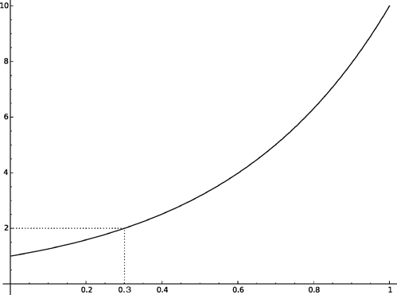
x的值为多少，10x=2？图表显示x=0.3时，10x=2。试试用你的计算器进行计算，你会发现100.3=1.99526…，这是接近但不完全等于2。我们需要稍微增加指数，让我们试试100.301，结果是1.99986。更接近但仍不完全等于2。我们还需要增大一点点指数。令10x=2的值是0.30102999566398114…而这个值就是lg2。（本章前部分已经出现了lg2这个数字。去找吧！）
指数定律10m×10n=10m+n可以用对数表示。为了展示这一过程，设a=10m且b=10n。
a的对数是多少？这就是求得到a值时，10的指数。因为a=10m，意味着log（a）=m。同理，log（b）=m。
a×b的对数是多少？我们知道a=10m和b=10n，所以a×b=10m+n。10的指数是多少能得到a×b的值，答案是m+n。用符号表示：log（a×b）=m+n。
概括如下：
log（a）=m，log（b）=n，log（a×b）=m+n。
将这些结合在一起产生以下对数定律：
log（ab）=log（a）+log（b）。 （**）
我们在哪里见过这种关系？
让我们把所有这些联系在一起。我们定义了
一个函数f，给出尾数小于某个值m时的测量值的
比例。它满足这三个属性：
f（1）=0，f（10）=1，且f（ab）=f（a）+f（b）
然后我们暂停下来，讨论对数，发现log函数满足这些性质：
log（1）=0，log（10）=1，log（ab）=log（a）+log（b）
换句话说，f和log在1和10处具有相同的值，并且它们符合等式（*）和（**）中所表达的相同的关系。据此（在f是连续的附加条件下），数学家可以证明f必定和log完全相同，现在我们准备计算出测量值的起始数字的分布。
以1开始的测量值的比例是多少？这等同于问尾数小于2的值的比例。所以答案是f（2），我们现在知道log（2）≈0.3010=30.1%。以9开头的测量值的比例是多少？答案是f（10）–f（9）［f（10）从所有测量值中减去尾数小于9的那些测量值］。我们得出：
f（10）–f（9）=log（10）–log（9）≈1–0.9542=0.0458=4.58%
我们问过f（1.7）的值，现在我们可以回答。f（1.7）=log（1.7）≈0.23=23%。
[1] 1米=3.2808英尺。——编者注
[2] 1米=1.0936码。——编者注